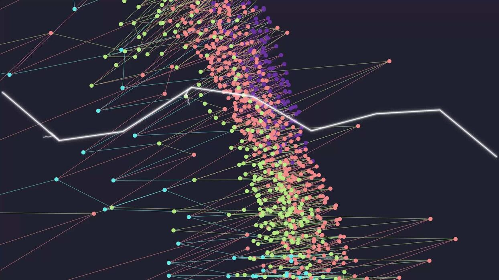
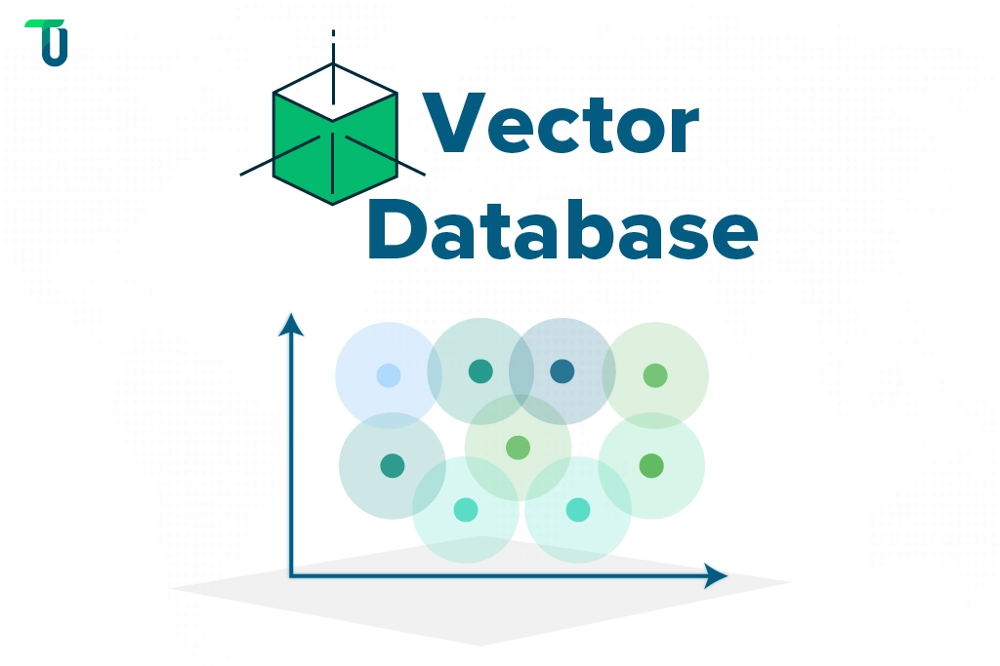
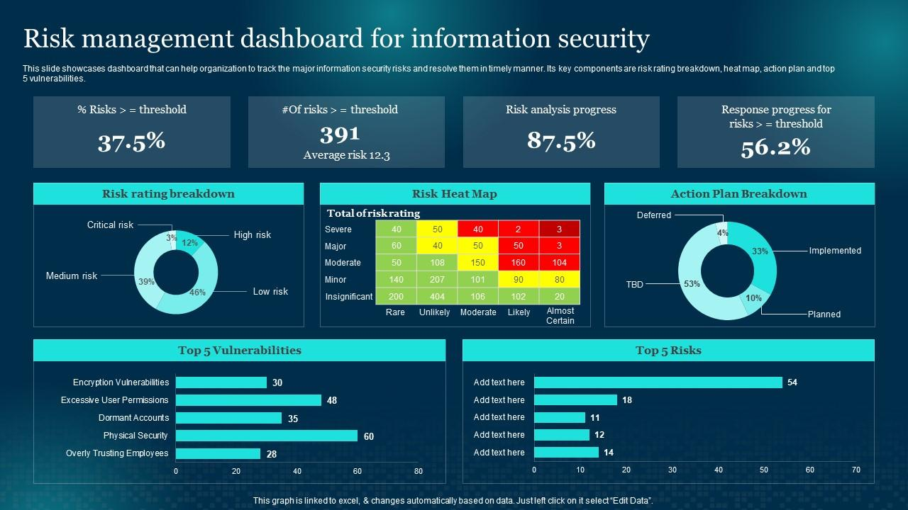
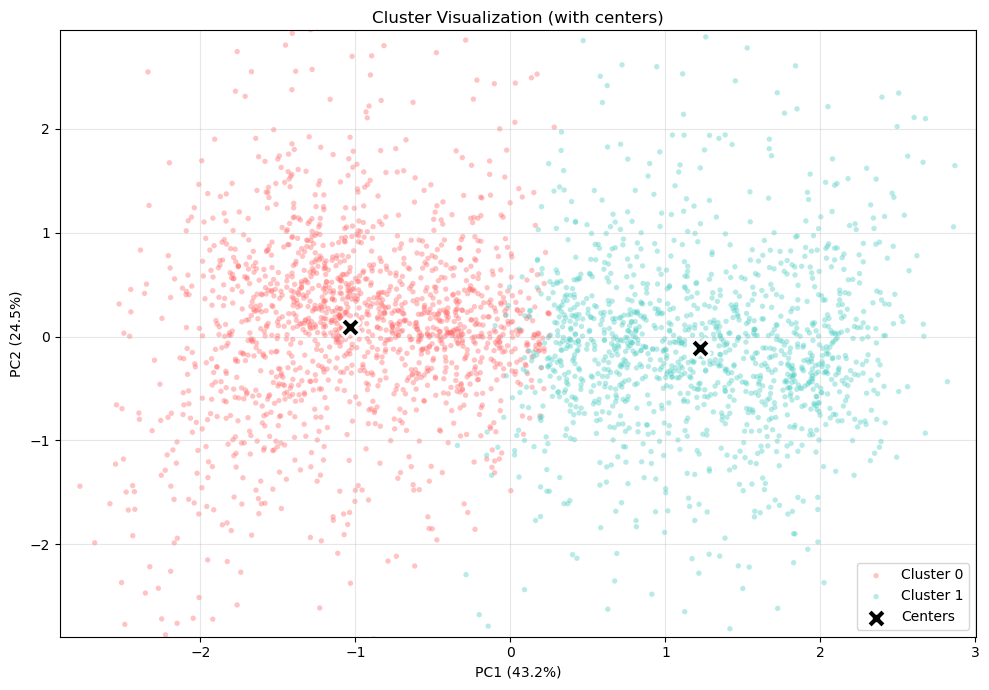
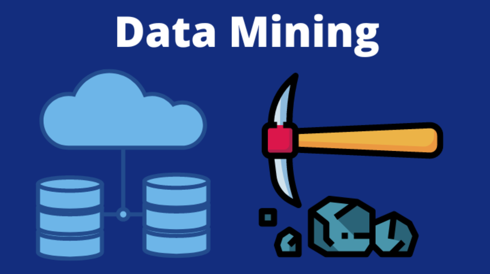
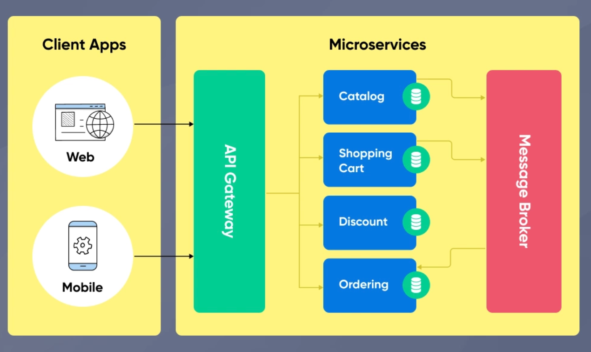

Regulatory Knowledge Platform
Building a traceable regulatory knowledge layer for European financial regulation—organising regulations, articles, metadata and legal relationships into a structured, explorable system.
Daniel Lee
Software Engineer · AI Builder · FinTech
I build practical AI systems that turn complex regulatory and risk information into searchable knowledge, traceable answers and executable workflows.
Featured AI projects
Current product directions are shown with their intended workflows. Links will be added when public demos, repositories or architecture notes are ready.

Building a traceable regulatory knowledge layer for European financial regulation—organising regulations, articles, metadata and legal relationships into a structured, explorable system.

An evidence-grounded regulatory question-answering system combining query planning, claim decomposition, hybrid retrieval and citation-bound LLM answers.

An AI-assisted workflow for second-line ICT-risk assessment that converts regulatory obligations into risks, control objectives, metrics, challenge activities and structured assessment outputs.
Selected work & research
Research and engineering work across financial data, distributed systems and analytics.



Experience
Working in a European financial-services context across ICT risk, cybersecurity, vulnerability management, monitoring, risk controls and AI applications—without exposing confidential systems or data.
Delivered backend and data integration for enterprise platforms, ERP/SaaS workflows, microservices and operational business systems in a digital-transformation environment.
Built backend services, APIs, distributed systems and client/server products across mobile gaming and internet platforms.
Continued technical study in Data and FinTech, extending an engineering foundation into data science, AI and financial innovation.
Core technologies
LLM APIs · RAG · LangGraph · Hybrid retrieval · Embeddings · AI agents
Python · FastAPI · Java · Spring · REST APIs · Microservices
PostgreSQL · MySQL · Pandas · Scikit-learn · Knowledge graphs
Docker · Git · Linux · Google Cloud · CI/CD
Writing
Contact
Feel free to reach out.